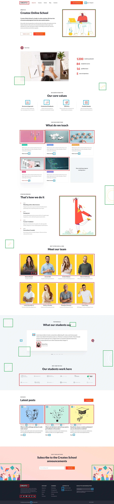
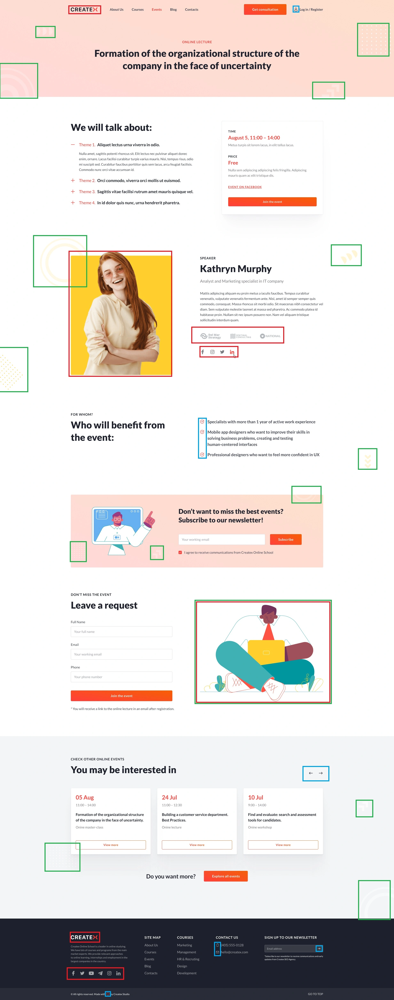

Красным - меняем. Зеленый - навсегда. Синий - иконки навсегда.
Примечание!
Контент, который выделен одновременно и красным и зеленым.
Т.к. типа это правильно...
На 90% я бы не давал пользователю возможность его менять.
1. Он полностью выдержан в дизайнерской задумке.
2. Я не вижу никаких мотивов, которые бы побудили "админа" их поменять.
3. Зато вижу перспективу все испортить.
4. Многие страницы выполнены и задумывались в виде лендинга.
5. Т.е. один раз "настроил", как надо и радуйся.
6. Врядли получится сделать лучше, чем у дизайнера.

